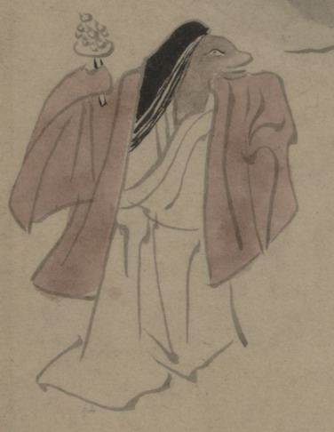

巫女の化物。狐などの獣が変化したものである。長い髪を垂らして、小豆色の袿をまとい、右袖で鈴を持って、踊っている。
出典：親書誌：U426_nichibunken_0150：付喪神絵詞；ツクモガミエコトバ／日付：2010／資源識別子：U426_nichibunken_0150_0045_0000
Copyright (c)2010- International Research Center for Japanese Studies, Kyoto, Japan. All rights reserved.